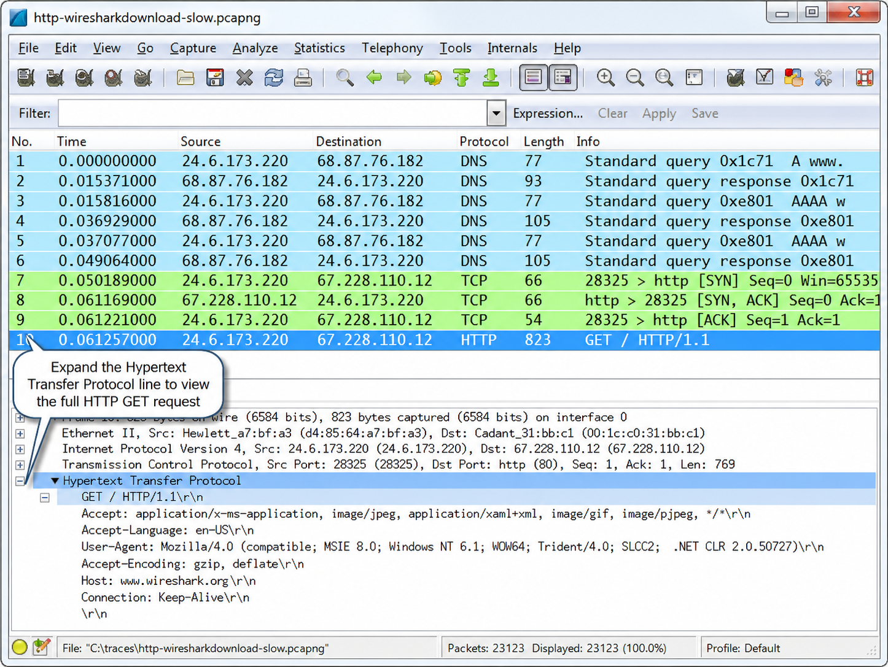
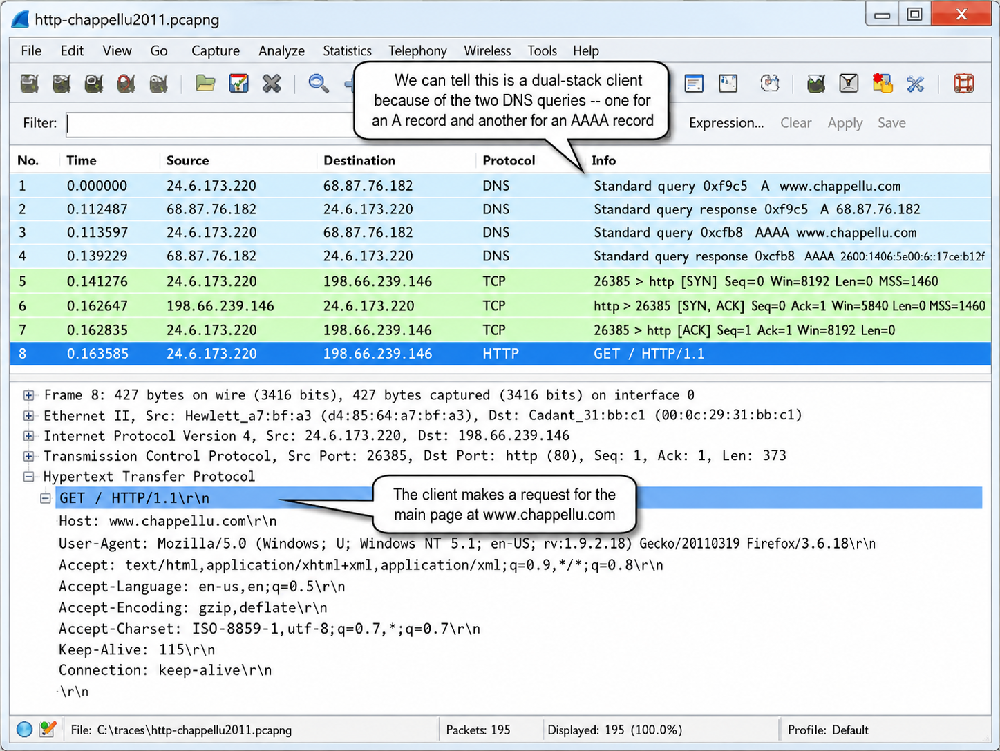
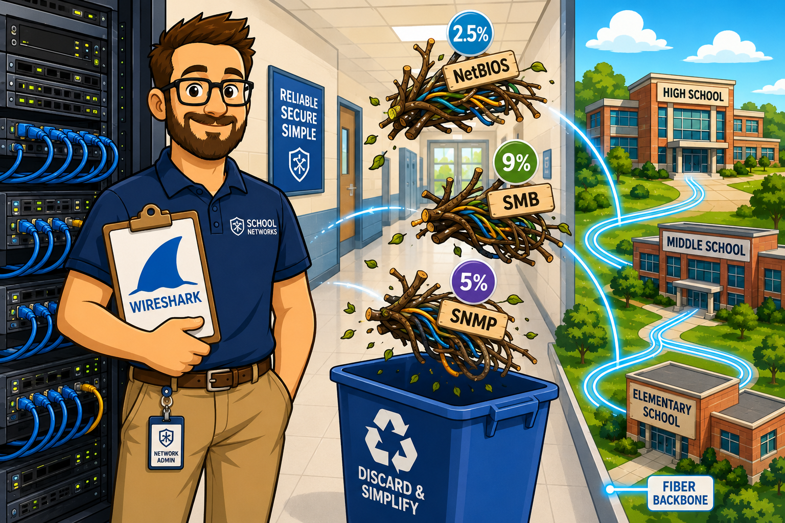
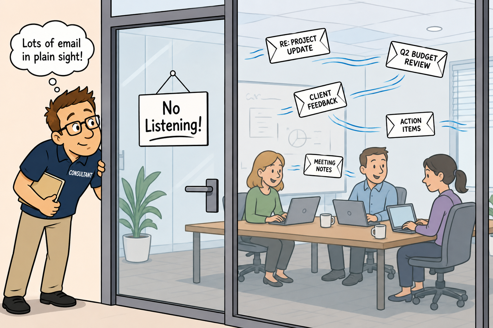

Network analysis requires three skills: understanding TCP/IP, comfort with Wireshark, and familiarity with packet structures and typical packet flows. Which of these three is the hardest to develop through reading alone — and what does a "baseline of understanding" actually mean in practice?
Define Network Analysis
Network analysis is the process of listening to and analyzing network traffic. Network analysis offers an insight into network communications to identify performance problems, locate security breaches, analyze application behavior, and perform capacity planning. Network analysis (aka "protocol analysis") is a process used by IT professionals who are responsible for network performance and security.
Whether you are completely new to network analysis or just returning after a hiatus — Welcome and welcome back!
Network analysis is not brain surgery. Anyone can analyze network communications. You do, however, need to acquire three basic skills to be a top notch network analyst:
- A solid understanding of TCP/IP communications
- Comfort using Wireshark
- Familiarity with packet structures and typical packet flows
From a network analyst's perspective, you need to understand the purpose of devices and protocols and how they interact. How exactly does a DHCP server offer an IP address and configuration information? What happens if there is a relay agent in use? What happens when the user's address lease time expires? How does the user learn the destination IP address when the user wants to reach www.wireshark.org? What happens if the local name server does not have the answer? What happens if the name server is down?
Seeing these processes in action at packet level is a fast way to learn the inner workings of your network. You build your baseline of understanding — the baseline is your foundational knowledge of how the processes are supposed to work.
Network analyzer tools are often referred to as "sniffers" and may be sold or distributed as a hardware-plus-software solution or as a software-only solution. Wireshark is distributed as an open source software-only solution, but there are add-on adapters that can enhance Wireshark's capabilities. The AirPcap adapter from Riverbed Technology is an example of a hardware add-on for 802.11 wireless capture in Monitor Mode.
The analysis example shows a client browsing to www.wireshark.org. When the download becomes painfully slow, the book says "you'd have known the answer long before" if Wireshark was running. But Wireshark captures thousands of packets per second — how would you actually pinpoint the slowdown among all that traffic?
Follow an Analysis Example
The typical network analysis session includes several tasks:
- Capture packets at the appropriate location
- Apply filters to focus on traffic of interest
- Review and identify anomalies in the traffic
You can follow along with a web browsing session by opening http-wiresharkdownload-slow.pcapng to see how the process works.
When you browse to www.wireshark.org, your system requests the IP address of www.wireshark.org. If your system supports both IPv4 and IPv6, you will see two DNS requests — one for the IPv4 (A record) and one for the IPv6 (AAAA record). Hopefully, the DNS server responds with the information you need.
Your client makes a TCP connection to www.wireshark.org and then sends an HTTP GET request asking for the default page (GET /) as shown in Figure 1.

If all goes well, you will see the HTTP server respond with a 200 OK response and the page download begins. You will see various GET requests sent from your system — you are requesting the style sheets for the page and graphics and other elements required to build the page.
When you click the Download Wireshark button, your system sends a request for /download.html. Your system may do a DNS query to find the IP address of the download server before making a new TCP connection and finally sending a GET request for the Wireshark file, as shown in Figure 2.

You can watch the process as the file is transferred to your local system. It all makes perfect sense. But what might you feel like if there is a communications problem?
You might sit patiently waiting — tapping your fingers ever so irritatingly on your desk. Waiting... waiting... until finally you just can't stand it anymore. This is taking waaaaay too long. At this rate you will miss lunch, dinner and potentially your summer vacation!
Maybe it's not www.wireshark.org that's having the problem. Maybe it's your WAN link (heaven forbid!) or your network (shiver!) or your DNS server (unthinkable!) or your desktop system (impossible!).
Well? Which is it?
If you'd been running Wireshark in the background, you would have known the answer long before. The packets never lie. They always point to where the problem is.
Network analysis allows us the opportunity to look inside the network communication system. We can pull back the curtains and watch the packets travel back and forth. We can SEE the DNS query being sent out and catch the timely DNS response providing an answer. We can watch our local system send a TCP connection request packet to www.wireshark.org. We can measure how long it takes for www.wireshark.org to answer and get a general feel for the round trip time to that site.
The troubleshooting walk-through moves Wireshark to a second location (just off the server) and finds that Mike's TCP handshake does NOT show SACK support — even though Mike's machine actually supports it. The server had been behaving correctly all along. Why would moving the capture location reveal something completely different from the first capture?
Walk-Through of a Troubleshooting Session
This is based on an actual customer visit where the complaint dealt with poor performance when clients upload files to a server from a branch office to corporate headquarters. When things were good the upload process took about 3 minutes. Now the upload process takes 10 to 15 minutes. Three IT staffers were gathered to assist: the infrastructure IT manager, the client IT manager and the server IT manager.
We discussed the situation with the IT staff; focused on identifying the best place to start capturing the traffic. The IT team pointed repeatedly to one user who complained on a regular basis — we'll call him Mike. We planned to start capturing as close to Mike's machine as possible.
Next we figured out how best to set up Wireshark for capture. We could not install Wireshark on Mike's machine, and no full-duplex tap was available. The customer did have switches that supported port spanning, so we connected Wireshark to Mike's upstream switch and spanned Mike's port. We ran a test or two to ensure the span command worked properly.
We began capturing all traffic without any filter in place. We asked Mike to begin performing a file upload to show us the performance issue. Watching the traffic as we were capturing, we saw numerous packets marked with a black background and red foreground — Bad TCP packets. After Mike finished the painfully slow upload process we stopped capturing and began the analysis process.
We isolated the file upload conversation by looking at the TCP conversations, sorting on the highest byte count and filtering on this conversation. We looked at the TCP connection to get a feel for round trip wire latency — all good here at 65ms. We also looked inside the TCP handshake packets to determine connection capabilities of Mike's machine and the server.
Next we created an IO Graph to see if there were sudden drops in IO rate (we'd want to focus on those first) or if the IO rate was lousy all the way through. It certainly was lousy all the way through with an average around 2.5 Mbps.
Next we examined the Expert Infos window. Over 12% of the traffic was marked as bad for some reason. Out of the 20,000 packets we captured during the test, there were over 1,000 Retransmissions and Fast Retransmissions. Hundreds of Duplicate ACKs indicate the receiver (the server) noticed much of the packet loss. This is what we would focus on first.
We did not see any Previous Segment Lost indications in the trace file. This indicates that Wireshark saw the original packet and the retransmission — packet loss had not occurred yet (not surprising as data was being sent from Mike's system right in front of us to the server, and packet loss typically occurs at infrastructure devices — this traffic had only crossed a single switch so far).
When we looked at the retransmissions, we noticed that Mike's machine was resending every packet from the lost packet forward. What? Not an expected recovery if the hosts were using Selective Acknowledgments (SACK). This is why looking at the TCP handshake process early in the analysis is important — we noticed Mike's machine indicated it supported SACK, but the server did not. Significant packet loss will have a severe impact on performance without SACK in place.
It appears packet loss is the ultimate issue, but the lousy recovery is making the situation unbearable. We needed to address two questions: Where is packet loss occurring? Why didn't the server support SACK?
The client was behaving properly by retransmitting data packets after the server asked for them (Duplicate ACKs). The client IT manager was off the hook. Since 99.999999% of the time packet loss occurs at an interconnecting device, we knew we had to start capturing closer to the server.
We talked about our findings and decided to set up a Wireshark system just off the server to see what the data upload looked like from that perspective. We spanned the server's port off that switch and began capturing, this time with a capture filter for Mike's IP address. We asked Mike to repeat the upload process.
We started by looking at the TCP handshake — what? It appeared that Mike's handshake packet did NOT indicate his system supported SACK. Instead we saw an illogical padding in the TCP header options area. This is a sign that a router likely stripped out some information and replaced the information with padding. Since the server believed that Mike couldn't support SACK, the server would not talk about it.
We spent some time looking through the company's infrastructure to see which device could have altered the TCP handshake Options field. We captured trace files at different points along the path and eventually found a security device along the path that was removing this option from the handshake. Working with the vendor, we eventually realized it was a feature (bug) that could be resolved with a software update and reconfiguration.
We verified that the performance improved substantially after the update and reconfiguration. We still had packet loss, but the recovery process using SACK made the packet loss almost imperceptible.
In Colton's investigation, the malicious application was communicating on TCP port 18067 instead of the standard IRC port 6667. The commands (USeR, NiCK, JOiN) used mixed case instead of all-caps. What does altering both the port number AND the command casing tell you about the attacker's threat model — and what did Wireshark reveal that IDS/IPS might have missed?
Walk-Through of a Typical Security Scenario (Network Forensics)
This is based on an actual customer issue prompted by a user who noticed their system was acting strangely — from slow performance to an inability to shut down the machine or place it into hibernate mode. One IT staffer, Colton, was focused on capturing the traffic to determine the cause of this behavior.
Colton began the analysis process with proper evidence handling considerations in mind. He decided to capture traffic close to the complaining host, SUSPECT1, to determine if there was any unusual traffic to or from that host. Colton had baselines of normal activity and knew the protocols SUSPECT1 typically used. He did not want to install Wireshark on SUSPECT1 in case the machine was infected with something and the issue went to Court — it's always best to be unobtrusive during this process. Colton connected a full-duplex tap to SUSPECT1 and connected Wireshark to the tap. Colton set up Wireshark in stealth mode.
Colton began capturing all traffic without any filter in place. He wanted to see every packet to or from SUSPECT1. Watching the traffic during the capture process, Colton began to see a huge number of TCP SYN packets to TCP port 135 (NetBIOS Session Service) and port 445 (NetBIOS Directory Service). There also appeared to be some ICMP traffic. While letting Wireshark continue to capture traffic, Colton began the analysis process.
In the traffic Colton saw SUSPECT1 connect to an outside server on an unusual port (TCP port 18067). Following that TCP stream, Colton noticed some recognizable commands — USeR, NiCK and JOiN. These commands are used in Internet Relay Chat (IRC) communications although they were not using all caps — likely to avoid case-sensitive IDS/firewall detection rules. The fact that the commands were altered and the port was nonstandard was a good indication the program generating them was trying to be sneaky.
Further analysis revealed the IRC channel was being used to download a malicious application. They also learned the host name of the IRC server. It did appear that SUSPECT1 was infected with something. Using all the evidence available — host name, downloaded file name, port number in use, etc. — Colton learned he was up against a bot. He also learned which security flaw enabled that host (and likely other hosts on the network) to become vulnerable.
Colton isolated the host from the network and began the process of cleaning that host. In addition, Colton began watching all network traffic to see which other hosts might be infected. By cutting off access to the IRC server he mitigated further damage from connections to that IRC server while he began to clean other hosts. Colton found and applied patches to the operating systems of all hosts to mitigate further threat from this vulnerability.
Colton documented his findings and his process to educate (1) users on the symptoms experienced, (2) management on his concerns of future vulnerabilities and (3) other IT staff members on his procedures for network cleanup.
The book divides analysis tasks into four types: Troubleshooting, Security, Optimization, and Application Analysis — and distinguishes between proactive and reactive analysis. Reactive analysis is described as more common. Why would proactive analysis (finding problems before users notice) be less common, and what would make it more feasible in practice?
Review a Checklist of Analysis Tasks
Analysis tasks can be considered proactive or reactive. Proactive methods include baselining network communications to learn the current status of the network and application performance. Proactive analysis can also be used to spot network problems before they are felt by the network users. Reactive analysis techniques are employed after a complaint about network performance has been reported or when network issues are suspected. Sadly, reactive analysis is more common.
Troubleshooting Tasks
Troubleshooting is the most common use of Wireshark. Troubleshooting tasks include, but are not limited to:
- Locate faulty network devices
- Identify device or software misconfigurations
- Measure high delays along a path
- Locate the point of packet loss
- Identify network errors and service refusals
- Graph queuing delays
Security Tasks
Security tasks can be both proactive and reactive and are performed to identify security scanning (reconnaissance) processes or breaches on the network. Security tasks include, but are not limited to:
- Perform intrusion detection
- Identify and define malicious traffic signatures
- Passively discover hosts, operating systems and services
- Log traffic for forensics examination
- Capture traffic as evidence
- Test firewall blocking
- Validate secure login and data traversal
Optimization Tasks
Optimization is the process of contrasting current performance with performance capabilities and making adjustments in an effort to reach optimal performance levels. Optimization tasks include, but are not limited to:
- Analyzing current bandwidth usage
- Evaluating efficient use of packet sizes in data transfer applications
- Evaluating response times across a network
- Validating proper system configurations
Application Analysis Tasks
Application analysis is the process of capturing and analyzing the traffic generated by a network application. Application analysis tasks include, but are not limited to:
- Analyzing application bandwidth requirements
- Identifying application protocols and ports in use
- Validating secure application data traversal
The following lists some of the analysis tasks that can be performed using Wireshark:
- Find the top talkers on the network
- Identify the protocols and applications in use
- Determine the average packets per second rate and bytes per second rate
- List all hosts communicating
- Learn the packet lengths used by a data transfer application
- Recognize the most common connection problems
- Spot delays between client requests due to slow processing
- Locate misconfigured hosts
- Detect network or host congestion slowing file transfers
- Identify asynchronous traffic prioritization
- Graph HTTP flows to examine website referral rates
- Quickly identify HTTP error responses indicating client and server problems
- Build graphs to compare traffic behavior
- Graph application throughput and compare to overall link traffic seen
- Identify applications that do not encrypt traffic
- Perform passive operating system and application use detection
- Spot unusual protocols and unrecognized port number usage
- Examine the startup process of hosts and applications on the network
- Identify average and unacceptable service response times (SRT)
- Graph intervals of periodic packet generation applications or protocols

Figure 5 shows routers changing the destination MAC address while keeping the IP address the same. Switches (Figure 4) forward packets without changing either. Why does a router change the MAC address but preserve the IP — and what would go wrong in a network if a router preserved the MAC address instead?
Understand Network Traffic Flows
Let's start at the packet level by following a packet as it makes its way from one host to another. We'll start by looking at where we can capture the traffic, then examine how a packet is encapsulated, then stripped nearly naked by some high-priced router only to be re-encapsulated and sent on its way again just before hypothermia sets in. Then we'll peek at the effect that Quality of Service (QoS) has on our traffic and where devices and technology puff up their chests, whip out their badges and throw up roadblocks that make us fear for our little packet lives.
Switching Overview
Switches are considered Layer 2 devices — a reference to Layer 2 of the Open Systems Interconnection (OSI) model — the data link layer which includes the Media Access Control (MAC) portion of the packet, such as the Ethernet header.

Switches forward packets based on the destination MAC address (aka the destination hardware address) contained in the MAC header. As shown in Figure 4, switches do not change the MAC or IP addresses in packets. When a packet arrives at a switch, the switch checks the packet to ensure it has the correct checksum. If the checksum is incorrect, the packet is considered "bad" and is discarded. Switches should maintain error counters to indicate how many packets they have discarded because of bad checksums.
If the checksum is good, the switch examines the destination MAC address and consults its MAC address table to determine if it knows which switch port leads to the host using that MAC address. If the switch does not have the target MAC address in its tables, it will forward the packet out all switch ports in hopes of discovering the target when it answers. If the switch does have the target MAC address in its tables, it forwards the packet out the appropriate switch port. Broadcasts are forwarded out all switch ports. Unless configured otherwise (e.g., IGMP snooping), multicasts are also forwarded out all switch ports.
Routing Overview
Routers forward packets based on the destination IP address in the IP header. When a packet is sent to the MAC address of the router, that router examines the checksum to ensure the packet is valid. If the checksum is invalid, the packet is dropped. If the checksum is valid, the router strips off the MAC header and examines the IP header to identify the "age" (Time to Live) and destination of the packet. If the packet is too "old" (TTL value of 1), the router discards the packet and sends an ICMP Time to Live Exceeded message back to the sender.
If the packet is not too old, the router consults its routing tables to determine if the destination IP network is known. If the router is directly connected to the target network, it can send the packet on to the target. The router decrements the IP header TTL value and then creates and applies a new MAC header to the packet before forwarding it, as shown in Figure 5.

If the target is not on a locally connected network, the router forwards the packet to the next-hop router that it learned about when consulting its routing tables. Routers may contain rules that block or permit packets based on the addressing information. Many routers provide firewall capabilities and can block/permit traffic based on other characteristics.
Proxy, Firewall and NAT/PAT Overview
Firewalls are created to examine traffic and allow/disallow communications based on a set of rules. For example, you may want to block all TCP connection attempts from hosts outside the firewall that are destined to port 21 on internal servers. Basic firewalls operate at Layer 3 of the OSI model. The firewall will forward traffic that is not blocked by the firewall rules. The firewall prepends a new MAC header on the packet before forwarding it. Additional packet alteration will take place if the firewall supports added features, such as Network Address Translation (NAT) or proxy capabilities.

NAT systems alter the IP addresses in the packet as shown in Figure 6. This is often used to hide the client's private IP address. A basic NAT system simply alters the source and destination IP address of the packet and tracks the connection relationships in a table to forward traffic properly when a reply is received. Port Address Translation (PAT) systems also alter the port information and use this as a method for demultiplexing multiple internal connections when using a single outbound address. The IP addresses you see on one side of a NAT/PAT device will not match the IP addresses you see on the other side. To correlate communications on both sides of a NAT device, you will need to look past the IP header to identify matching packets.
Proxy servers also affect traffic. Unlike standard firewall communications, the client connects to the proxy server and the proxy server makes a separate connection to the target. There are two totally separate connections to examine when troubleshooting these communications.
Other Technologies that Affect Packets
There are numerous other technologies that affect network traffic patterns and packet contents.
Virtual LAN (VLAN) tagging (defined as 802.1Q) adds an identification (tag) to the packets. This tag is used to create virtual networks in a switched environment. Figure 7 shows a VLAN tag in an Ethernet frame. In this case, the sender belongs to VLAN 32.

Multiprotocol Label Switching (MPLS) is a method of creating virtual links between remote hosts. MPLS packets are prefaced with a special header by MPLS edge devices. The packet is forwarded based on the MPLS label, not routing table lookups. The MPLS label is stripped off when the packet exits the MPLS network.
Warnings about "Smarter" Infrastructure Devices
You paid a bunch of money for those brilliant infrastructure devices and you didn't expect them to be the cause of your network problems, did you? Numerous "security devices" do more than route packets based on simple rules — they get in there and mess up the packets. For example, Cisco's Adaptive Security Appliance (ASA) performs "TCP normalization." In essence, an ASA device forced TCP hosts on both sides of it to go back to pre-2006 capabilities.
Wide Area Network (WAN) optimization techniques can also alter the packet and data stream process by compressing traffic, offering locally-cached versions of data, optimizing TCP or prioritizing traffic based on defined characteristics (traffic "shaping"). The best way to know how these technologies affect your traffic is to capture the packets before and after they pass through a traffic-altering device.
The same capability that lets a network analyst diagnose problems — capturing unencrypted traffic — can also expose passwords and confidential data to malicious eavesdroppers. Is this fundamentally a tool problem or a network design problem, and what does the answer imply about how security should be approached?
Understand Security Issues Related to Network Analysis
Network analysis can be used to improve network performance and security — but it can also be used for malicious tasks. For example, an intruder who can access the network medium (wired or wireless) can listen in on traffic. Unencrypted communications (such as clear text user names and passwords) can be captured and may enable a malicious user to compromise accounts. An intruder can also learn network configuration information by listening to the traffic — this information can then be used to exploit network vulnerabilities. Malicious programs may include network analysis capabilities to sniff the traffic.
Define Policies Regarding Network Analysis
Companies should define specific policies regarding the use of a network analyzer. Your company policies should state who can use a network analyzer on the network and how, when and where the network analyzer may be used. Ensure these policies are well known throughout the company. If you are a consultant performing network analysis services for a customer, consider adding a "Network Analysis" clause to your non-disclosure agreement. Define network analysis tasks and be completely forthcoming about the types of traffic that network analyzers can capture and view.
Files Containing Network Traffic Should be Secured
Ensure you have a secure storage solution for the traffic that you capture because confidential information may exist in the traffic files (referred to as trace files). If you are capturing traffic with Personally Identifiable Information (PII), HIPAA (health records), or other protected information, the trace files should not leave the facility. If lost, it may require that the client report a data breach.
Protect Your Network against Unwanted "Sniffers"
As you will learn in Chapter 3: Capture Traffic, switches make network analysis a bit more challenging. Basic switches are not security devices. Unused network ports and network ports in common areas (such as building lobbies) should be deactivated to discourage visitors from plugging in and listening to network traffic. The best protection mechanism against network sniffing is to encrypt network traffic using a robust encryption method. Encryption solutions will not protect general network traffic that is broadcast onto the network for device and/or service discovery however. For example, DHCP clients broadcast DHCP Discover and Request packets. These packets contain information about the client (including the host name, requested IP address and other revealing information). These DHCP broadcasts will be forwarded out by all ports of a switch. A network analyzer connected to that switch is able to capture the traffic and learn information about the DHCP client.
Be Aware of Legal Issues of Listening to Network Traffic
We aren't lawyers, so consult your legal counsel on this issue. In general, Wireshark provides the ability to eavesdrop on network communications. Unauthorized use of Wireshark may be illegal. In the U.S., Title I of the ECPA (Electronic Communications and Privacy Act), often referred to as the Wiretap Act, prohibits the intentional, actual or attempted interception, use, disclosure, or "procure[ment] [of] any other person to intercept or endeavor to intercept any wire, oral, or electronic communication." Title I offers exceptions for operators and service providers.
In the European Union, the Data Protection Directive defines the protection of individuals with regard to the processing of personal data and on the free movement of such data. For details on the EU Data Protection Directive, visit ec.europa.eu/justice_home/fsj/privacy/.
Seven techniques are listed to avoid the "needle in a haystack" problem when faced with thousands of packets. The book orders them: placement → capture filters → display filters → colorize → reassemble streams → save subsets → graphs. Why does placement come first — and what does that order tell you about where the real power lies?
Overcome the "Needle in the Haystack Issue"
Many times new analysts capture thousands (or millions) of packets and are faced with the "needle in a haystack issue" — the feeling that they are drowning in packets. Several non-pharmaceutical analysis procedures can be used to avoid or deal with this situation:
- Place the analyzer appropriately (covered in Chapter 3: Capture Traffic) — as close to the complaining user as possible to capture only the most relevant traffic.
- Apply capture filters to reduce the number of packets captured (covered in Chapter 4: Create and Apply Capture Filters) — define what traffic should be captured before you begin.
- Apply display filters to focus on specific conversations, connections, protocols or applications (covered in Chapter 9: Create and Apply Display Filters) — filter down the view after capture.
- Colorize the conversations in more complex multi-connection communications (covered in Chapter 6: Colorize Traffic) — make specific traffic types visually distinct.
- Reassemble streams for a clear view of data exchanged (covered in Chapter 10: Follow Streams and Reassemble Data) — see the application-layer conversation as text.
- Save subsets of the captured traffic into separate files (covered in Chapter 12: Annotate, Save, Export and Print Packets) — extract and share just the relevant portion.
- Build graphs depicting overall traffic patterns or apply filters to graphs to focus on particular traffic types as shown in Figure 3 (covered in Chapter 8: Interpret Basic Trace File Statistics and Chapter 21: Graph IO Rates and TCP Trends).
Step 5 of the launch process says: "If your system supports both IPv4 and IPv6, you may see two DNS queries." What does seeing ONLY one DNS query (for the A record, not AAAA) tell you about the client machine — and if you see NO DNS queries at all before a TCP connection, what does that imply?
Launch an Analysis Session
You can start capturing and analyzing traffic right now. Follow these steps to get a feel for analyzing traffic on a wired network first.
Install Wireshark. Visit www.wireshark.org/docs/wsug_html_chunked/ChapterBuildInstall.html for details on installing Wireshark on numerous platforms.
Launch Wireshark and click on your wired network adapter listed in the Interface List on the Start Page and click Start. Wireshark should be capturing traffic now. (If your adapter is not listed, you cannot capture traffic. Visit wiki.wireshark.org/CaptureSetup/NetworkInterfaces for assistance.)
If you have browsed to www.chappellU.com recently, clear your browser cache before this step. Refer to your browser Help for details on how to clear your browser cache. In addition, consider clearing your DNS cache. While Wireshark is capturing traffic, launch your browser and visit www.chappellU.com.
Select Capture | Stop on the Main Menu or click the Stop Capture button on the Main Toolbar.
Look through the captured traffic. You should see a DNS query (unless you did not clear your DNS cache in Step 3). If your system supports both IPv4 and IPv6 you may see two DNS queries — one for the IPv4 address (A record) of www.chappellU.com and one for the IPv6 address (AAAA record) of www.chappellU.com. After you make a connection to the site, your browser would send a GET request to the server as shown in Figure 8.

You may see traffic from other processes in the trace file. For example, if your browser performs a website blacklist check to identify known malicious sites, you will see this traffic preceding connection to www.chappellU.com. Display filters can be used to remove unrelated traffic from view so you can focus better on the traffic of interest. For more information on display filtering, refer to Chapter 9: Create and Apply Display Filters.
Select File | Save and create a \mytraces directory. Save your file using the name chappellu.pcapng (Wireshark automatically appends the file extension .pcap or .pcapng, depending on which file format is set in your Wireshark preferences — we recommend saving your trace files in pcap-ng format to support packet and trace file annotations.)
You did it! Well done. You are well on your way to learning network analysis — one of the most valuable and fundamental skills of network management and security.

Our school district is comprised of 24 buildings and roughly 50 VLANs. Generally speaking, each campus has one VLAN for data and one for voice. For the most part each campus is its own VLAN, with some smaller sites sharing a single VLAN. We operate in a NetWare environment with at least one NetWare server at each campus. Each campus links back to an aggregate location before it is sent on to the router; what some like to call "Router on a Stick."
I use Wireshark on a regular basis to monitor traffic patterns and remove unnecessary traffic from the VLANs that I manage. Two types of traffic that I have eliminated are NetBIOS and SMB. Since we are in a NetWare environment we use NDPS for our printing services and do not require Windows File and Printer Sharing. Because of this I turn off NetBIOS and SMB on the machines that I manage. I recently sampled four other VLANs (out of my control) by taking a five minute PCAP. After the capture, I sifted through the traffic using filters to determine what percentage of traffic was NetBIOS and SMB. Although the results are lower than what I expected, trimming what I did find could be beneficial to switch/router processing, and most of all security.
- A capture containing 50,898 packets returned a combined total of 1,321 packets or 2.5% NetBIOS/SMB traffic.
- A capture containing 175,824 packets returned a combined total of 16,480 packets or 9% NetBIOS/SMB traffic.
- A capture containing 295,911 packets returned a combined total of 14,102 packets or 5% NetBIOS/SMB traffic.
- A capture containing 115,814 packets returned a combined total of 333 packets or less than 1% NetBIOS/SMB traffic.
I have used Wireshark to track down and remove other unnecessary protocols like SNMP and SSDP as well. We only use SNMP on Cisco equipment so eliminating it from network printers has cleaned up the network.

One customer's network consisted of 22 buildings in a campus-style setting. Management complained that the network was slow at times and had asked a consultant to come onsite to determine the cause of poor network performance.
Upon arrival, I was asked to sign a legal document stating that I would not listen to the network traffic to isolate the problem (you, as I do, must question why they called me).
The management at this company was concerned that confidential data may traverse their network in an unencrypted form. The management was ignoring the fact that there are many ways for someone to tap into their network. If their data is visible to a network analyst, it would be best to verify that and fix the problem, not just assume that no one is listening.
It took several meetings with various individuals to convince management that they were a bit "off" on their thinking.
Once I began listening to their network traffic it became evident that they had good reason to be concerned. Their Lotus Notes implementation was misconfigured — all emails traveled through the network in clear text.
Over the next few hours of listening to the network traffic we found several applications that sent sensitive data across the network. By the time I left they had a list of security enhancements to implement on the network.
The World of Network Analysis
Network analysis offers an insight into network communications. When performance problems plague the network, guesswork can often be time-consuming and lead to inaccurate conclusions costing you and your company time and money. A full understanding of the network traffic flows is necessary to (a) place the analyzer properly on the network and (b) identify possible causes of network problems.
At this point it is recommended that you follow the procedures listed in Launch an Analysis Session and review the section entitled Follow an Analysis Example.